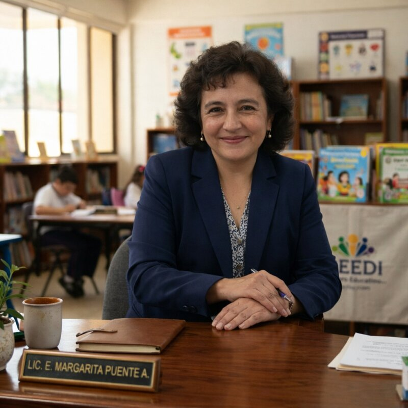

Club de Tareas y Desarrollo Infantil Integral
Apoyo académico especializado para niños de 3 a 12 años (Club de tareas, regularización y tutoría 6° a 1° de secundaria), así como estimulación y acompañamiento para niños de 2 a 5 años. Un modelo pedagógico diseñado para construir hábitos de estudio, autonomía y confianza.
Formando Generaciones con Excelencia Académica
Un legado de constancia y adaptación continua en la Ciudad de México (2002 - 2026).
Origen Institucional
Iniciamos labores en Av. San Francisco 195, Col. Presidentes Ejidales, sur de la CDMX, bajo la denominación Jardín de Niños "El Pato Lucas".
Consolidación CEEDI
Traslado al No. 289 de la misma avenida. Nace formalmente el Centro Educativo y se acompañan más de 10 generaciones escolares.
Sede Col. Avante
Reubicación a Calle del Parque 13, consolidando 8 nuevas generaciones con un enfoque de nivelación y hábitos de estudio.
Evolución Metodológica
Soporte pedagógico en línea para familias y evolución estratégica hacia Club de Tareas, Regularización e Intervención Especializada.
Sede Militar Marte
Ubicación actual en Calle Playa Hornitos 8, Iztacalco, CDMX. Instalaciones dedicadas al acompañamiento académico, tutorías de transición y estimulación temprana.

Compromiso Académico y Formación Humana
"Cada niño que llega a nuestro Centro trae consigo un universo de posibilidades. Mi misión, desde hace más de 27 años, ha sido acompañar a cada uno de ellos con la firmeza del conocimiento y la calidez pedagógica."
Con más de 27 años dedicados a la docencia e intervención psicopedagógica, la Dirección Académica cuenta con un sólido respaldo profesional e institucional:
Programas y Servicios Especializados
Estrategias adaptadas al ritmo de aprendizaje de cada estudiante.
Club de Tareas
Supervisión diaria y sistematizada del cumplimiento escolar. Orientada a fomentar la autonomía, organización y hábitos de estudio disciplinados.
- Acompañamiento escolar post-jornada
- Supervisión de contenidos y tareas
- Opción de servicio de comida y traslado
Regularización Académica
Atención enfocada en superar rezagos específicos en matemáticas, lenguaje, redacción y razonamiento lógico.
- Sesiones de 2 horas diarias (Lunes a Jueves)
- Diagnóstico psicopedagógico inicial
- Estrategias didácticas personalizadas
Tutoría para Paso a Secundaria
Diagnóstico oficial contra programa SEP, plan de refuerzo por temas y material preparado respaldado por AulaIQ Tutoría.
- 7 áreas del programa oficial diagnosticadas
- Refuerzo en 13 materias de 1° de secundaria
- Cotización por sesión individualizada
Lecto-Escritura
Desarrollo estructurado del proceso lector y de escritura mediante métodos fonéticos y globales que aseguran fluidez y comprensión.
- Método gradual de maduración lectora
- Desarrollo de motricidad fina y grafía
- Comprensión lectora temprana
Atención Especializada
Estrategias pedagógicas adaptadas para alumnos con TDAH, dislexia o dificultades específicas de aprendizaje en un ambiente seguro.
- Adaptaciones metodológicas individuales
- Coordinación con especialistas externos
- Ambiente libre de frustración escolar
Estimulación Temprana y Acompañamiento
Desarrollo psicomotor, sensorial y afectivo en grupos reducidos. Un espacio seguro de acompañamiento educativo previo a la educación primaria.
- Jornadas Matutina (9:00–13:00) o Extendida (7:45–18:00)
- Alimentos balanceados opcionales
- Entorno familiar y no masificado
Tutoría para el Paso a Secundaria
Abrimos un programa de tutoría especializado para estudiantes que terminan 6° de primaria y entran a 1° de secundaria. En CEEDI diagnosticamos contra el programa oficial de la SEP, armamos un plan de refuerzo por tema y trabajamos cada sesión con material listo. Acompañamiento apoyado en AulaIQ Tutoría.
Diagnóstico Real por Área
Evaluación temática por cada una de las 7 áreas de 6°. Identificamos el nivel real de dominio y los temas clave por reforzar, no solo un promedio global.
Plan de Trabajo por Tema
Estructuramos un plan a la medida. Cada tema se aborda en 2 a 5 días de sesión al ritmo del estudiante, sin calendarios rígidos.
Sesiones Presenciales en CEEDI
Explicación guiada, ejemplos resueltos y práctica supervisada. La docente llega con el material preparado y la familia observa avances medibles.
7 Áreas Oficiales del Diagnóstico de 6° de Primaria:
Voces de familias y generaciones
Padres, madres y exalumnos comparten su experiencia con el CEEDI. Los testimonios se publican tras una breve revisión.
Aún no hay testimonios en esta categoría. ¡Sé de los primeros en compartir el tuyo!
Comparte tu testimonio
Si eres mamá, papá, tutor o exalumno (¡también si ahora traes a tu hijo o hija!), cuéntanos tu experiencia. Revisamos cada mensaje antes de publicarlo.
Simulador de Cuotas Mensuales Referenciales 2026
Selecciona las modalidades mensuales para calcular la inversión referencial.
Este programa se cotiza por sesión (no tiene una cuota fija mensual). Cada estudiante recibe una propuesta a la medida tras su diagnóstico inicial.
Solicitar cotización por sesión vía WhatsApp ➔Incluye club de tareas, alimentos, regularización y seguimiento diario.
Consultar Cupo y Agendar Entrevista * Cuotas referenciales correspondientes al ciclo 2026. Entrevista diagnóstica previa requerida.Ubicación Institucional y Atención
Le invitamos a conocer nuestras instalaciones y agendar una entrevista psicopedagógica para su hijo o hija.
Dirección
Calle Playa Hornitos No. 8, Col. Militar Marte, Alcaldía Iztacalco, C.P. 08830, Ciudad de México.
Atención Directa & WhatsApp
Horario de Atención
Lunes a Viernes de 08:00 a 19:00 hrs.